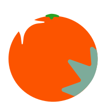

Удобный и простой способ
начать осознанное
потребление с нуля
Хотите освоить осознанное потребление, но боитесь, что будет сложно разобраться? Вам точно к нам! Мы развеем ваши сомнения и поможем на вашем пути.



Мы поможем:
- Научиться вести осознанный образ жизни
- Сделать процесс понятным и увлекательным
- Приобрести доверие к утилизации
- Осознать, что один человек может изменить многое


Почему стоит быть более осознанными?

Переработка может предотвратить захоронение потенциально полезных материалов и сократить потребление первичного сырья, тем самым снизив потребление энергии, загрязнение воздуха (от сжигания), загрязнение воды, загрязнение почвы (от захоронения).

Какие преимущества имеет сортировка и переработка отходов?
Главным преимуществом сортировки бытовых отходов является устранение экологически опасных ситуаций, причиной которых являются крупные свалки. На данных объектах мусор начинает гнить, что приводит к распространению бактерий и токсичных продуктов, которые могут проникать в подземные воды и загрязнять почву.